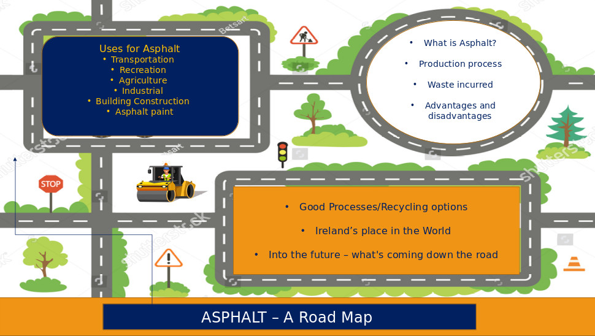
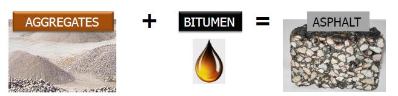
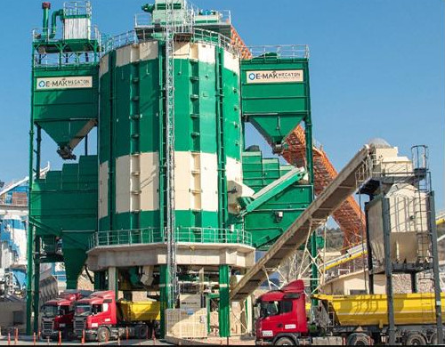
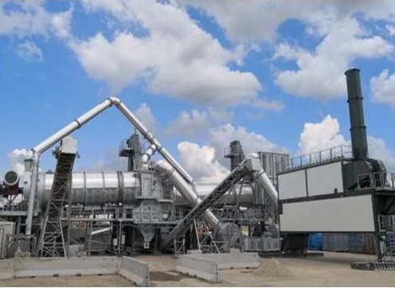
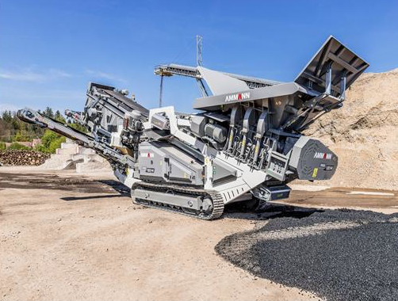
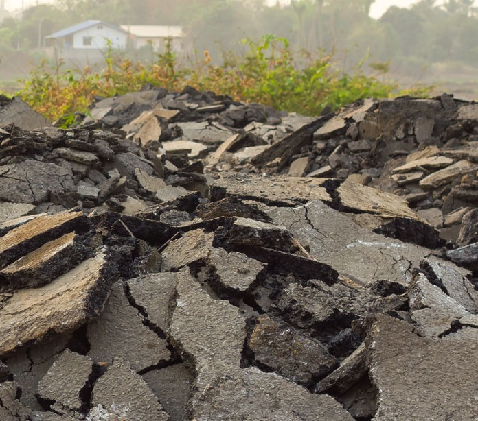
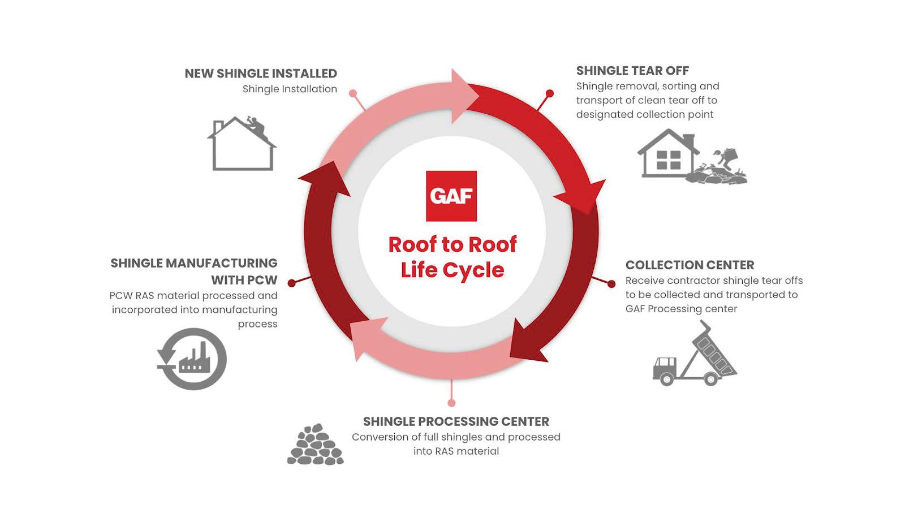
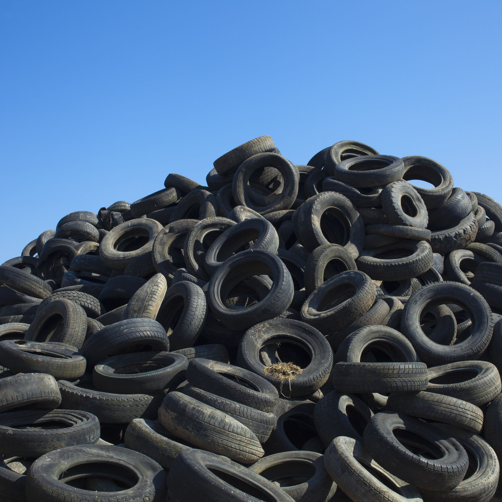
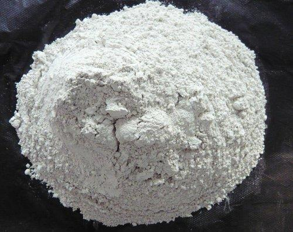

Exploring the sustainability in asphalt life cycle
While often overlooked when discussing construction materials, asphalt is one of the fundamental and most widely used materials in construction industry today and will most likely remain so, at least until flying cars become the norm (even then there will still be cyclists).
With that in mind, it is important to explore the effect of this material on the world we live in, and how current practices within the industry will impact the future generations.
In this short brief we will try to do so following the life cycle of the material.
The life cycle of asphalt was examined through following sections:
- Uses for asphalt as a raw material
- Technologies used in asphalt production
- Waste and pollution associated with asphalt
- Asphalt recycling
- Developing technologies
The scope of this project is best depicted on a roadmap that serves as a graphic guide.

Before getting into specifics, it might be a good idea to examine what actually constitutes asphalt as a material.

Asphalt is a mixture of aggregates, binder and filler.Different mixes of these components are used depending on the Asphalt required for each job.In order to bind the aggregates together into a cohesive mixture a binder is required, most commonly Bitumen is used for this purpose, although a series of bio-based binders are also under development with the aim of minimising the environmental impact.
You may still hear people referring to Tarmac and tarring a road. In Ireland tar has not been used in road construction since the 1990’s. Tar is totally different from bitumen. They are both black, but tar comes from coal and bitumen from heavy crude oil.
There are many different Types of Asphalt, some of the more used mixes in construction are:
- HRA – Hot Rolled Asphalt is a predominantly a sand based mix. In approximately 30 to 35 percent of its uses, pre-coated chippings are applied to its surface onsite by a chipping machine (chipper) and rolled into the hot mix. This provides surface texture for zones where vehicles will be breaking, for example at roundabouts.
- SMA - Stone Mastic Asphalt is mainly used in road construction as it has high strength, durability and is resistant to deformations
- WMA - Warm Mix Asphalt is a bituminous mixture that embracing technology that allows the material to be manufactured at lower production temperatures. This reduces the amount of fuel required to dry and heat the aggregates in the bituminous material, resulting in lower energy consumption and lower CO2 emissions. Incorporating this technology means that the performance characteristics of the Warm Mix Asphalt are the equivalent of a HRA despite being produced at a lower temperature. Warm Mix Asphalt is a “greener” more environmentally sustainable option.
Europe has over 2500 asphalt production sites and over 9500 companies are involved in asphalt production and/or laying.
List of references:
Technologies used in asphalt production
Most manufacturers of asphalt mixing plants prioritise recycling capability in their equipment. Recycled asphalt pavement (RAP) content in new asphalt production varies greatly between plants, with the more basic plants expected to utilise as little as 15% RAP and the larger, more technologically advanced plants with the capacity to use 100% RAP.

E-Mak Megaton is a cold mix asphalt / aggregate plant that features:
- Filtration system reduces dust
- In-built aggregate recycling system
- Moisture control
- Reduces energy consumption
- Operational capacity of 450 tons per hour
- More info on E-MAK web page

Marini Master Tower is a hot mix asphalt plant whose main characteristics are:
- Uses a specially designed drum system at 160°C
- RAP is heated by the gases from the drum
- No direct contact with heat source
- Emissions reduced
- Allows for use of 100% RAP
- More info on Marini web page here and here.

Amman RSS 120-M Shredder is a RAP processor whose main characteristics are:
- Can recycle both milled materials and large chunks/ slabs
- Reduces dust emissions
- Fuel efficient
- Electrically – powered motor
- Minimum capacity of 80 tons per hour
- More info on Amman web page.

Benninghoven recycling parallel drum is a add-on plant equipment that features:
- Gas expansion chamber reduces air speed
- Counter-flow heating system
- Lower exhaust temperature
- Reduces energy consumption
- Reduces emissions
- For additional info see World Highways web page and Wirtgen Group web page.
Additional references:
Waste and pollution associated with asphalt
As a petroleum based product asphalt is a highly volatile organic compound substance and during its production, just like during any other crude oil refinement process, certain amount of harmful gasses are released. The exact amount of those emissions vary from source to source but among most commonly mentioned are carbon monoxide, nitrogen oxides, sulfur and benzene.
By using modern technology most of those emissions can be more or less effectively contained, and of course that aspect of industry is being continuously improved.
According to study conducted at Yale University in 2020, asphalt emissions increase significantly when subjected to temperatures above 40 degrees celsius. which is actually a normal temperature for asphalt roads during summer months in southern europe, southern United States and similar climates. So according to that study even when just sitting in the sun asphalt is actually a pollutant.
Full article on that can be found here

The best practice in pavement industry lies in recyling.
In total about 100 million metric tonnes of bitumen is used every year worldwide, about 85% of that is used for paving, 10% for roofing and 5% on other uses.
With that figures in mind its interesting to see the Irish Environmental Protection Agency report for 2018 where bituminous mixes account for only 1% of out of Ireland 6.2 million tonnes of construction and demolition waste
Link to full report here
Recycling into the future
Asphalt roof shingles
In the U.S. approximately 13 million tons of aspahlt roof shingles are removed from old roofs each year, at current recycling rates only about 10% of that figure gets recycled each year into paving and roads.
New technologies are developing this year that is projected to see upwards of 90% of old asphalt roof shingles being recycled and reused back into brand new shingles.
These new technologies are also being explored through a developing grinding process to be used on all asphalt products with the goal of creating a circular economy for asphalt in general.
GAF is committing more than $100 million in research and to bring this process to a commercial scale
Reference

Asphalt recycling in roads
Trials have been conducted mixing recycled asphalt material with used vehicle tyres in recent years, using the process that are currently being developed it might be possible to make self-repairing roads in the future
Reference
Developing technologies for sustainable future
Warm Mix Asphalt technology as an alternative to Hot Mix Asphalt:
- Lower production temperature and less harmful emissions and energy consumption
- Equals or betters the performance of HMA in terms of moisture damage resistance, adhesion and resistance to cracking
- Achieved through foaming, organic additives and chemical additives
- Foaming is the most popular technique, accounting for 77% of WMA usage in the United States between 2009 and 2011
- Introduction of water into hot binder during production, generates bubbles, provides low viscosity and increases its volume
- Apply high temperatures at the desired water content in order to optimise the workability of the binder
- The organic additive technique is the poorest long-term performer of the three in terms of resistance to cracking
- Environmental footprint significantly lesser than HMA

Warm Mix Rubberised Asphalt Concrete (a marriage of two techniques):
- Utilising crumb rubber chippings from scrap tyres (benefit – recycling, drawback – environmental toll due to waste production and air quality from processing)
- In wet weather, the run-off from the pavement may introduce harmful chemicals from the rubber into local watercourses.
- Most of the drawbacks can be equalised by variations in the binder and aggregate content
- WMRAC is itself entirely recyclable
- Rivals the performance of HMA
- Reduces the overall production of greenhouse gases and energy wastage
- Aids the environment by preventing waste tyres from being burned or landfilled

Asphalt rejuvenation using waste cooking oil (WCO)
- Sustainable solution to the growing problem of waste oil management
- A rejuvenator is a recycling agent which improves the overall properties of aged asphalt by recovering the penetration value and softening point
- This will bring the quality in line with standard bitumen, rather than restoring the precise structure of the original binder
- WCO shares some common components with bitumen
- Add the WCO directly into the binder, ideally after it has been filtered/purified (sometimes after being chemically treated)
- Improves thermal crack resistance and fatigue resistance

Ground Granulated Blast-furnace Slag (GGBS) in asphalt
- Commonly used in place of Portland cement in concrete production
- Is a by-product of iron and steel manufacturing
- Recycling waste materials
- Laboratory test results showed an improvement in rut resistance, water sensitivity and compressive strength ratio
- The addition of GGBS allows for a reduction in the amount of asphalt mix used, thereby saving money
Organic Solution – Bio-oil derived from microalgae
- Microalgae can be converted into crude oil, which is a suitable base material for binder
- The energy value from this bio-oil matches that of fossil fuels
- A biological solution – making use of natural resources, reducing harmful emissions
- Microalgae is already used for wastewater treatment and can be reused to produce asphalt, thereby promoting a circular economy
List of references:
- Kavanagh, Lohan, & Salih, 2014
- BCFocus, 2020
- Tabaković, 2020
- Algae World News, 2019
- Shishehbor & Reza Pouranian, 2019
- Review of warm mix rubberized asphalt concrete: Towards a sustainable paving technology, 2017
- Haque, 2019
- Zahoor, Nizamuddin, Madapusi, & Giustozzi, 2021
- Algae World News. (2019, December 4). Microalgae yields biofuels & high-value by-products.
- Ammann Group. (2021). RSS 120-M.
- BCFocus. (2020, October 30). Global Ground Granulated Blast-Furnace Slag Market 2020: Expected Development, Share, Demand And Study Of Key Players- Research Predictions 2025.
- E-MAK. (2020). Megaton Aggregate Factory.
- Haque, T. (2019, October 23). Steps to Starting a Tire-Shredding Business.
- Jha, S. K. (2020, February 24). HOW TECHNOLOGICAL INNOVATIONS ARE DISRUPTING THE ASPHALT MIXING PLANTS DEMAND.
- Kavanagh, A., Lohan, G., & Salih, A. (2014, July 17). GGBS improves rut resistance and water sensitivity in asphalt mixes.
- World Highways. (2019, June 14). Asphalt plant innovations.
- Zahoor, M., Nizamuddin, S., Madapusi, S., & Giustozzi, F. (2021). Sustainable asphalt rejuvenation using waste cooking oil: A comprehensive review. Journal of Cleaner Production Volume 278, NA